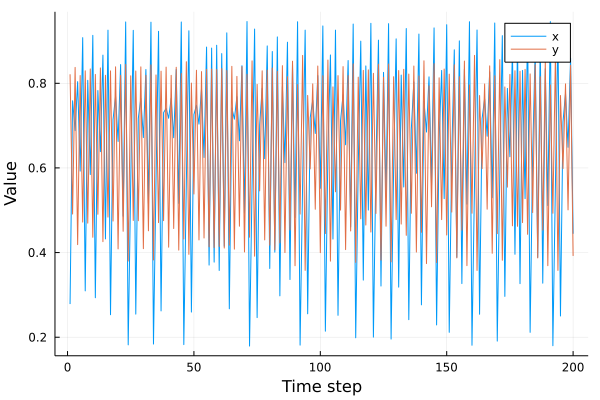
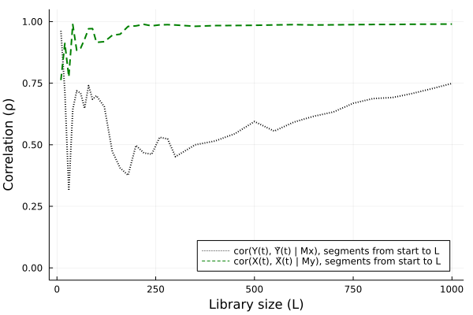
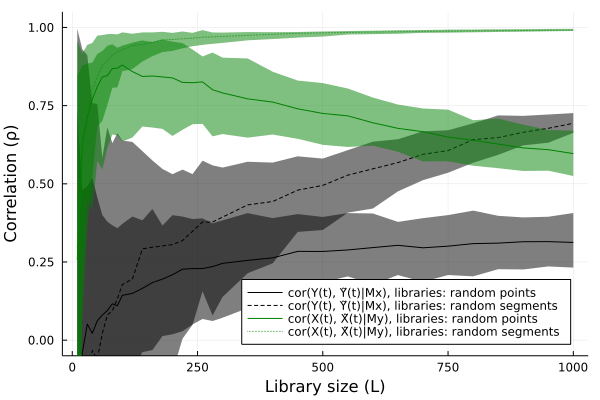

Cross mapping
CausalityTools.CrossMappings.crossmap — Functioncrossmap(x, y, d, τ; r = 0, correspondence_measure = Statistics.cor) → Float64
crossmap(x, y, d, τ, bootstrap_method::Symbol; r = 0, correspondence_measure = Statistics.cor,
method = :segment, L = ceil(Int, (length(x)-d*τ)*0.2), nreps = 100) → Vector{Float64}Compute the cross mapping [Sugihara2012] between x and y, which is the correspondence (computed using correspondence measure) between the values $y(t)$ and the cross-map estimated values $ỹ(t) | M_x$. Returns the correspondence between original and cross mapped values (the default is ρ = correspondence_measure(y(t), ỹ(t) | M_x)).
Here, $y(t)$ are the raw values of the time series y, and $ỹ(t)$ are the predicted values computed from the out-of-sample embedding $M_X$ constructed from the time series x with embedding dimension d and embedding lag τ.
The Theiler window r indicates how many temporal neighbors of the predictee is to be excluded during the nearest neighbors search (the default r = 0 excludes only the predictee itself, while r = 2 excludes the point itself plus its two nearest neighbors in time).
If bootstrap_method is specified, then nreps different bootstrapped estimates of correspondence_measure(y(t), ỹ(t) | M_x) are returned. The following bootstrap methods are available:
bootstrap_method = :randomselects training sets of lengthLconsisting of randomly selected points from the embedding $M_x$ (time ordering does not matter). This is method 3 from Luo et al. (2015)[Luo2015], which critiqued the original Sugihara et al. methodology.bootstrap_method = :segmentselects training sets consisting of time-contiguous segments (each of lenghtL) of embedding vectors in $M_x$ (time ordering matters). This is method 2 from Luo et al. (2015)[Luo2015].
Example: reproducing Sugihara et al. (2012)
Let's try to reproduce figure 3A in Sugihara et al. We start by defining the bidirectionally coupled logistic maps they use for that example (the parameters used can be found in their supplementary material).
using CausalityTools, DynamicalSystems, Plots, StatsBase, Statistics; gr()
function eom_logistic_bidir_sugihara(dx, x, p, n)
c_xy, c_yx, rx, ry = (p...,)
x, y = x[1], x[2]
dx[1] = x * (rx - rx * x - c_yx * y)
dx[2] = y * (ry - ry * y - c_xy * x)
return
end
function logistic_bidir_sugihara(;u₀ = rand(2), c_xy = 0.5, c_yx = 0.5, rx = 3.78, ry = 3.66)
DiscreteDynamicalSystem(eom_logistic_bidir_sugihara, u₀, [c_xy, c_yx, rx, ry])
end
# Create a system of nonidentical logistic maps where coupling from variable x to variable y
# is stronger than vice versa.
sys = logistic_bidir_sugihara(u₀ = [0.4, 0.2], c_xy = 0.1, c_yx = 0.02, rx = 3.8, ry = 3.5)
npts = 5000
orbit = trajectory(sys, npts, Ttr = 10000)
x, y = columns(orbit);
plot(xlabel = "Time step", ylabel = "Value")
plot!(x[1:200], label = "x")
plot!(y[1:200], label = "y")
Naive estimation
The most naive form sampling for the cross mapping procedure is to construct embeddings from all points in the original time series. This yields a single cross map estimate.
# Embedding dimension 2, embedding lag 1
d, τ = 2, 1
# Cross map estimates from x to y, and from y to x
cm_xy, cm_yx = crossmap(x, y, d, τ), crossmap(y, x, d, τ)(0.9602698466217806, 0.998791724613473)The term convergent cross mapping does not come into play until we compute the cross mapping for different time series length L.
If $cor(y(t), ỹ(t) | M_x)$ converges with increasing time series length[Sugihara2012], or library size L in the case of bootstrapping (see below), then $M_x$ contains information about $y$. In the context of causal inference, this means that x causally influences y, and there is a directional dynamical coupling from x to y. Conversely, if $cor(x(t), x̃(t) | M_y)$ converges with increasing time series length or L, then that is interpreted as dynamical coupling from y to x.
Let's see if either is true for these example time series. We'll increase L by simply subsampling the time series from index 1 to L for increasing L.
# Select some time series lengths
Ls = [10:10:100; 120:20:300; 350:50:1000]
cs_xy_increasing_segments = [crossmap(x[1:L], y[1:L], d, τ) for L in Ls]
cs_yx_increasing_segments = [crossmap(y[1:L], x[1:L], d, τ) for L in Ls]
p_naive_segments = plot(legend = :bottomright, ylabel = "Correlation (ρ)", xlabel = "Library size (L)")
plot!(Ls, cs_xy_increasing_segments, c = :black, lw = 2, ls = :dot, label = "cor(Y(t), Ỹ(t) | Mx), segments from start to L")
plot!(Ls, cs_yx_increasing_segments, c = :green, lw = 2, ls = :dash, label = "cor(X(t), X̃(t) | My), segments from start to L")
ylims!((-0.05, 1.05))
As in the original CCM paper, we observe that the correlation between observed and cross-map estimated values is stronger and converges faster when using $M_y$ to estimate $x̃(t)$ (green), than when using $M_x$ to estimate $ỹ(t)$ (black). Why? In this example, we set c_xy = 0.1 and c_yx = 0.02. Therefore, "... the much stronger effect of species X on Y implies faster convergence for predicting X than for Y" (Sugihara et al., 2012)[Sugihara2012].
Bootstrapping
Computing a single estimate for the cross mapping is essentially the same as computing a single estimate for the mean of a sample. To more robustly estimate the cross map statistic, we can use bootstrapping. To do so, we simply employ the five-argument version of the crossmap function, where the fifth argument is a symbol indicating the type of bootstrapping.
Using the same library sizes as before, we repeat the cross mapping procedure, but using bootstrapping. For each L, we obtain nreps = 100 different estimates of ρ and plot the 95 percentile confidence intervals.
Ls = [10:10:100; 120:20:300; 350:50:1000]
nreps = 200
cs_xy = [crossmap(x, y, d, τ, :random, L = L, nreps = nreps) for L in Ls]
cs_xy_seg = [crossmap(x, y, d, τ, :segment, L = L, nreps = nreps) for L in Ls]
cs_yx = [crossmap(y, x, d, τ, L = L, :random, nreps = nreps) for L in Ls]
cs_yx_seg = [crossmap(y, x, d, τ, :segment, L = L, nreps = nreps) for L in Ls]
cs_xy_lower = median.(cs_xy) .- [quantile(cs_xy[i], 0.025) for i = 1:length(Ls)]
cs_xy_upper = [quantile(cs_xy[i], 0.975) for i = 1:length(Ls)] .- median.(cs_xy)
cs_yx_lower = median.(cs_yx) .- [quantile(cs_yx[i], 0.025) for i = 1:length(Ls)]
cs_yx_upper = [quantile(cs_yx[i], 0.975) for i = 1:length(Ls)] .- median.(cs_yx)
cs_xy_seg_lower = median.(cs_xy_seg) .- [quantile(cs_xy_seg[i], 0.025) for i = 1:length(Ls)]
cs_xy_seg_upper = [quantile(cs_xy_seg[i], 0.975) for i = 1:length(Ls)] .- median.(cs_xy_seg)
cs_yx_seg_lower = median.(cs_yx_seg) .- [quantile(cs_yx_seg[i], 0.025) for i = 1:length(Ls)]
cs_yx_seg_upper = [quantile(cs_yx_seg[i], 0.975) for i = 1:length(Ls)] .- median.(cs_yx_seg)
p_random = plot(legend = :bottomright, ylabel = "Correlation (ρ)", xlabel = "Library size (L)")
plot!(Ls, median.(cs_xy), ribbon = (cs_xy_lower, cs_xy_upper),
label = "cor(Y(t), Ỹ(t)|Mx), libraries: random points", c = :black)
plot!(Ls, median.(cs_xy_seg), ribbon = (cs_xy_seg_lower, cs_xy_seg_upper),
label = "cor(Y(t), Ỹ(t)|Mx), libraries: random segments", c = :black, ls = :dash)
ylims!((-0.05, 1.05))
plot!(Ls, median.(cs_yx), ribbon = (cs_yx_lower, cs_yx_upper),
label = "cor(X(t), X̃(t)|My), libraries: random points", c = :green)
plot!(Ls, median.(cs_yx_seg), ribbon = (cs_yx_seg_lower, cs_yx_seg_upper),
label = "cor(X(t), X̃(t)|My), libraries: random segments", c = :green, ls = :dot)
ylims!((-0.05, 1.05))
#plot(p_random, p_segments, layout = grid(1, 2), size = (800, 350))
When using bootstrapping, we get the same results as when contiguous segments of the original time series: using $M_y$ to estimate $x̃(t)$ converges faster than in the opposite direction due to the stronger influence from x to y than vice versa.
- Sugihara2012Sugihara, George, et al. "Detecting causality in complex ecosystems." Science (2012): 1227079.http://science.sciencemag.org/content/early/2012/09/19/science.1227079
- Luo2015"Questionable causality: Cosmic rays to temperature." Proceedings of the National Academy of Sciences Aug 2015, 112 (34) E4638-E4639; DOI: 10.1073/pnas.1510571112 Ming Luo, Holger Kantz, Ngar-Cheung Lau, Wenwen Huang, Yu Zhou